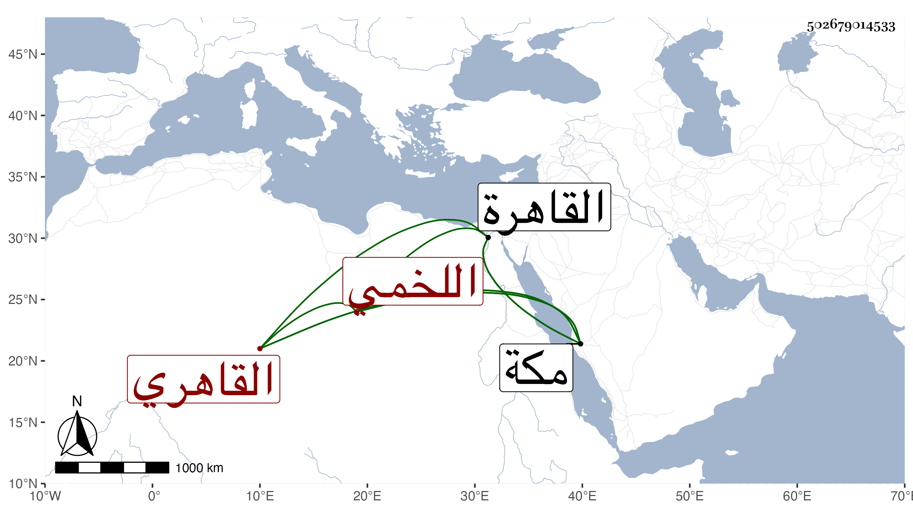

0902Sakhawi.DawLamic.ITO20230111-ara1.EIS1600.502679014533
Biography ID: 502679014533
29
محمد بن محمد بن أحمد بن عبد العزيز الشمس اللخمي السنتراوي الأصل القاهري ابن عم جهة شيخنا ، ممن قرأ عليه وسمع عليه المنهاج الأصلي والبساطي وأبي القسم النويري سمع عليه بقراءة المحب الطبري الإمام في مختصر ابن الحاجب وأبن إمام الكاملية سمع عليه شرحه للبيضاوي وأبي الفضل المشدالي سمع عليه العضد وعنه أخذ في المنطق والهندسة والكلام ، وكان دخوله القاهرة في أثناء سنة سبع وثلاثين وسمع بها من شيخنا وناصر الدين الفاقوسي وسمع بمكة علي أبي الفتح المراغي ، وكان فاضلا خيرا منجمعا غالبا . مات في يوم الأربعاء تاسع رمضان سنة ست وسبعين بمكة . أرخه ابن فهد ووصفه في طبقة بالإمام العالم ونعم الرجل كان رحمه الله .
